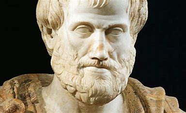

Аристотел (на старогръцки: Ἀριστοτέλης, [aristotélɛːs]) е древногръцки
философ и учен, един от най-големите гении на Античността и е наричан
„Баща на науката“. Ученик на Платон и учител на Александър Велики,
Аристотел е сред малкото личности в историята, изследвали почти всяка
тема, достъпна за своята епоха. В науката той изучава анатомия,
астрономия, география, геология, зоология, метеорология и физика. Във
философията той пише за естетика, етика, икономика, метафизика, политика,
психология, реторика и теология. Занимава се още с образование, чуждоземни
обичаи, литература и поезия. Съчиненията му са на практика енциклопедия на
древногръцкото познание.
Сведенията за живота на Аристотел са ограничени и много подробности
остават спорни или неясни. Писаните през Античността биографии често са
спекулативни и съвременните изследователи приемат за безспорни само част
от сведенията в тях.
Сведенията за живота на Аристотел са ограничени и много подробности остават спорни или неясни. Писаните през Античността биографии често са спекулативни и съвременните изследователи приемат за безспорни само част от сведенията в тях. Аристотел, чието име означава „най-добра цел“, е роден през 384 г. пр. Хр. в древногръцкия град Стагира на Халкидическия полуостров, откъдето идва прозвището му Стагирит. Баща му Никомах (fl.: 375 г. пр. Хр.) е личен лекар на македонския цар Аминта III. Майка му се казва Фестия, дъщеря на лекар от град Халкида, остров Евбея. Той има брат Аримнест и сестра с името Аримнеста. Сведенията за детството на Аристотел са оскъдни, но се предполага, че прекарва известно време в македонския царски двор. Баща му умира, когато той е още дете, и негов настойник става Проксен от Атарней, съпруг на сестра му Аримнеста. Първоначално Аристотел е обучаван от Проксен, а когато става на около осемнадесет години, заминава за Атина, където продължава обучението си в Академията на Платон и остава там близо две десетилетия. Той напуска Атина около 347 г. пр.н.е. – според традиционната история, защото е недоволен от Спевсип, наследник на Платон начело на Академията, но е възможно да е заминал и още преди смъртта на Платон, опасявайки се от антимакедонските настроения в Атина. Връзката между възгледите на Аристотел и Платон е предмет на спорове. Докато някои изследователи смятат философията на Аристотел за постепенно еволюирала от възгледите на Платон, други я смятат за напълно несъвместима с правилното разбиране на платонизма. След като напуска Атина, Аристотел отива заедно с Ксенократ при своя съученик Хермий, тиран на град Атарней в Мала Азия. През този период той пътува с Теофраст до остров Лесбос, където двамата изследват местната флора и фауна. В Атарней Аристотел се жени за Пития, осиновена дъщеря или племенница на Хермий, от която има дъщеря, също наречена Пития. Малко след смъртта на Хермий през 343 г. пр.н.е. Аристотел напуска Атарней и по покана на македонския цар Филип II става учител на сина му, бъдещият Александър Велики, който тогава е на 13 години. В Македония той оглавява царската академия и преподава не само на Александър, но и на други благородници, сред които и бъдещите царе Птолемей и Касандър.